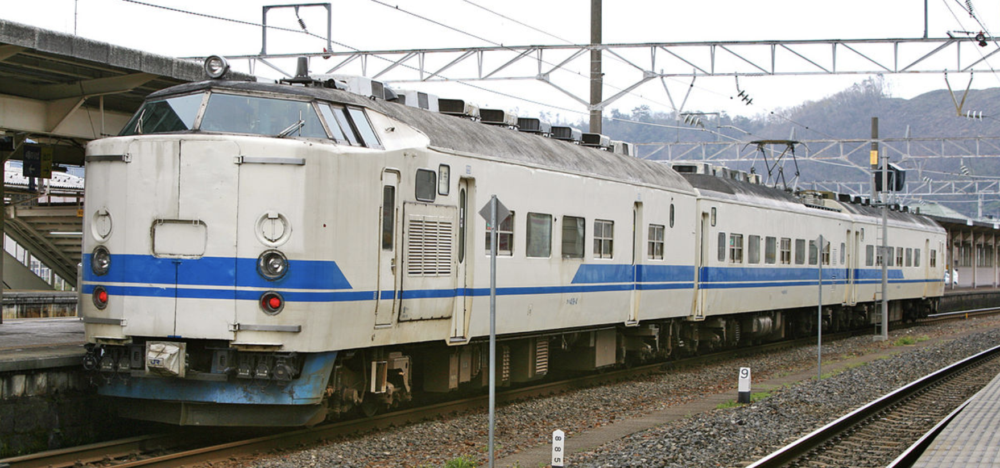
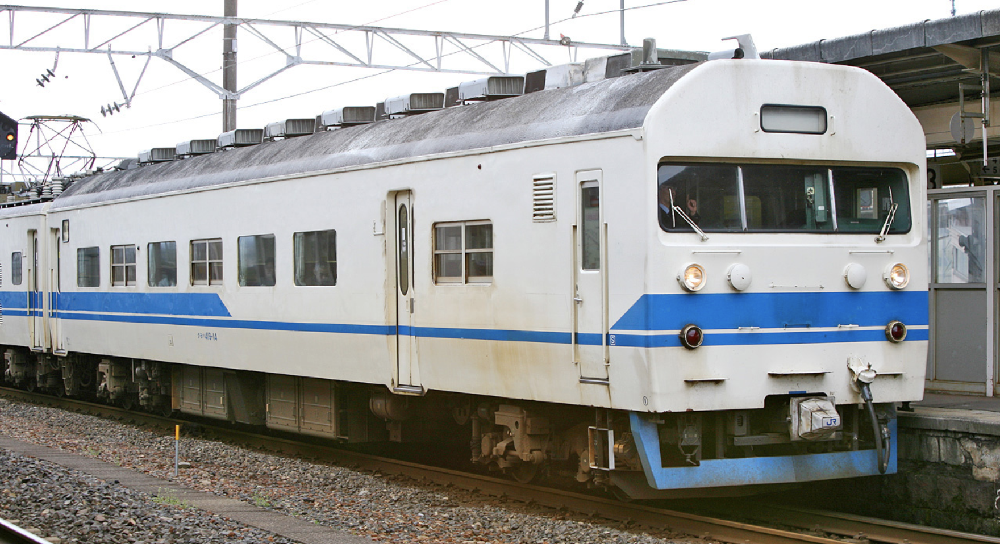
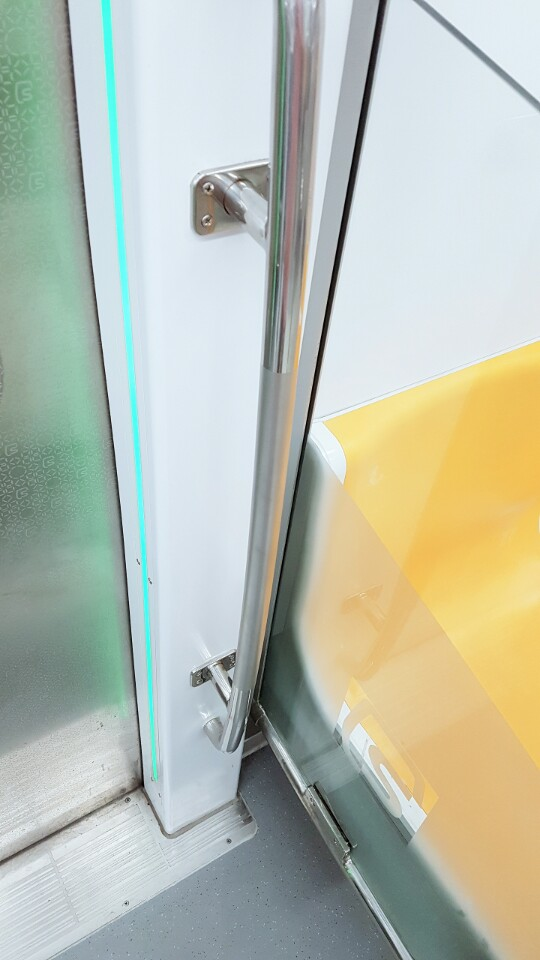
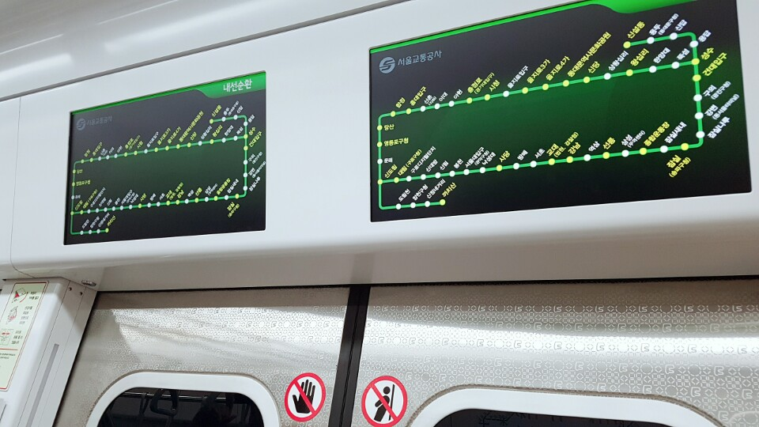
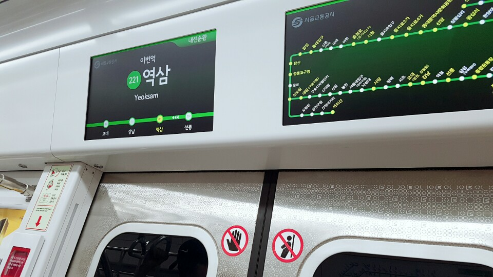

#철도이야기 3
본론에 앞서: 철도이야기 코너 자체는 처음이지만 넘버링을 3으로 해서 철도이야기와 지리이야기를 통합해서 운영하고자 한다.
오늘 정말 몇 달 만에 지하철을 타보았는데, 운이 좋게도 2호선 신차를 잡을 수 있었다! 스크린도어 너머로 보이던 열차의 겉모습부터 2호선의 일반 열차들과 뚜렷이 구별되는 것을 알 수 있었다. 무엇보다 새하얀 알루미늄 차체가 눈길을 끌었다.
아쉽게도 제조사/제조년도 팻말과 열차 편성 팻말은 못 찍었다. (신차를 보고 너무나도 놀란 나머지) 인터넷에 찾아보니 현대로템이 아닌 다원시스 제작이며, 반입일자 기준으로 2017년 반입 열차는 206~210번, 2018년 반입 열차는 211~213, 239~242, 285~286번으로 운행된다고 한다.
흥미로운 사실은 206편성 열차는 실제 표기를 D206과 같이 한다고 한다. 이유는 현 206편성과 구별을 하기 위해서라고 한다. 실제로 현재 2호선에는 저항제어 전동차 중 206편성 번호를 달고 달리고 있는 열차가 있다고 한다. 저항제어는 이제 정말로 폐차할 때가 왔는데 굳이 신차에 D까지 붙여서 운행시키는 것을 보니 앞으로도 저항제어 전동차는 계속 달릴 운명인가 보다. 이 정도면 1989년 도입한 JR 서일본 221계 1차분 열차도 몇 년 전 완전히 개조를 시켜 아직까지 JR 교토선, 고베선 등지에서 쾌속으로 잘 굴려먹고 있는 일명 ‘짠돌이’ JR 서일본이 연상된다. 사실 JR 서일본의 짠돌이 기질은 히로시마 권(인구 110만) 노선(広島シティーネットワーク)에서 더 잘 드러나는데, 일례로 구형 전동차를 몇 번이나 개조를 시키면서 오랫동안 굴리다가 자그마치 30년 만에 신차(JR 서일본 227계 전동차)를 등장시키기도 했다. JR 동일본이 니가타 권(인구 80만)에서 굴리는 신식 열차들과 너무나도 대비된다. 개조하니까 생각난 건데, 옛날 국철은 JR 서일본보다 한 수 위인 마의 개조를 보여주었다. 바로 419계 전동차. 애초에 특급형 전동차를 근거리 통근열차로 개조해야겠다는 발상을 한 것부터가 정말 대단하다.

열차 한 쪽 끝은 지극히 정상적이다. 아무리 봐도 특급형 전동차이다. (물론 측면을 자세히 보면 이질감이 느껴지긴 한다.)
다른 한 쪽 끝이다. 정말 말이 안 나온다.
하지만 JR 서일본은 사실 굉장히 불쌍한 철도 회사이기도 하다. 혼슈의 서쪽 끝 시모노세키(下関)부터 멀리는 나가노 현(長野県) 미나미오타리(南小谷)(이 역부터는 JR 동일본 관할이기때문에 치바/도쿄/신주쿠에서 출발하는 몇몇 특급 아즈사 호가 미나미오타리 종착으로 운행되고 있는 것이다!) 까지 정말 넓은 영업 구역을 지닌 JR 서일본이지만 실질적 주력 노선들은 모두 간사이 지방(오사카(大阪), 교토(京都), 나라(奈良))에 몰려있는데, 하필 이 지방이 일본 전국에서 철도 노선 간의 경쟁이 가장 치열한 곳이다. 16대 일본 대형 사철 중 5개가 특히 고베-오사카-교토 구간에 모여있는데, 이러한 과도한 경쟁 구도가 결국 일본 사상 최대의 철도 사고인 2005년 JR서일본 후쿠치야마선 아마가사키 역 탈선 사고(JR福知山線脱線事故)(사망 107명, 부상 562명)를 낳기까지 이른다. 이 사건 이후 사철-JR 간 경쟁에 일단 어느 정도 제동이 걸린 상태이지만, 아직까지 JR 서일본이 다른 JR 회사들에 비해 충분한 실적을 못 내고 있는 것은 사실이다. JR 서일본의 그 유명한 최고영업속도 130km/h의 신쾌속(新快速) 등급도 실은 JR 서일본이 자사가 다른 사철에 비해 철로 선형이 좋은 점을 최대한 활용하여 고속 수송을 목적으로 만든 것이다.
쓰다보니 JR 서일본에 대한 내용이 너무 길어졌는데, 본론으로 돌아가겠다. (이는 필자의 한국 철도에 대한 지식 부족을 증명하는 것이기도 하다.)
사실 사진들은 고작 해봐야 3장 밖에 안 된다. 한국은 일본과 달리 아직 철도 문화가 자리잡고 있지 않아 실제로 지하철 안에서 열차 사진을 찍고 있다 보면 사람들의 시선이 곱지만은 않다. 이 사진들도 사람들이 필자 쪽을 보고 있지 않을 때 빨리 찍은 것이다.
먼저, 한 가지 놀라운 점은 열차 출입문 양쪽 옆에 긴 LED 봉이 설치되어 있다는 점이다. 역 도착 전 30초 가량부터 열리는 문 쪽 빛이 초록색으로 반짝이며, 역 도착 후 출입문이 열리면 노란색으로 바뀌어 깜빡거린다. 매우 마음에 든다.
이 사진에서 한 가지 주목할 만한 점은 열차 일부에 아직 (구) 서울메트로 로고가 박혀있다는 것이다. 서울메트로와 서울도시철도가 서울교통공사로 합병되기 전 만들어진 편성, 즉 아마 2017년 반입된 206~210편성을 탄 것으로 추측된다. 2018년 도입된 열차도 이 마크를 계속 사용하고 있으려나?
 무엇보다 가장 눈에 띄는 변화는 LCD 안내판이다. 한 쪽에 총 2개의 LCD 안내판이 달려있는데, 이 중 하나는 2호선 노선도를 계속 표시하고 있고 나머지 하나는 주행 중, 역 도착 시 화면이 계속 바뀐다. 특히 이 사진들에는 나오지 않았지만 환승 안내 시 디자인이 굉장히 마음에 들었다.
사람이 많아 가장 중요한 열차 외부와 전반적 내부 사진을 찍지 못했지만 신차를 잡게 된 것 만으로도 영광으로 생각한다.